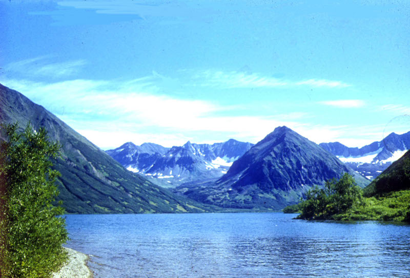

Гиперссылки в HTML небходимы для связи различных документов, как в пределах одного сайта, так и в пределах всей сети интернет. Для создания гипертекстовых связей (гиперссылок) используется дескриптор <a>: <a href= "адрес_документа">текст ссылки</a> При помощи атрибута href передается адрес документа, на который указывает ссылка. В качесте гиперссылок могут выступать самые разнообразные объекты, в том числе изображения. Например, это фото отсылает на сайт, посвященный водному туризму  а эта ссылка на на начало страницы